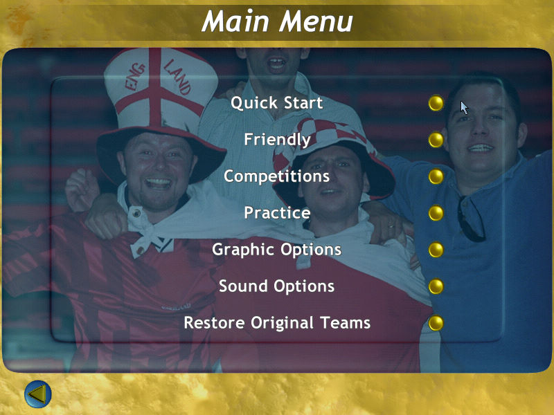
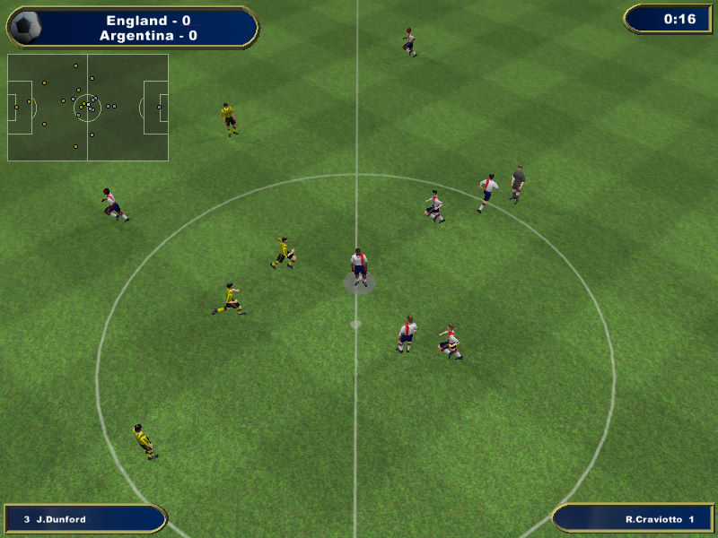

名稱：埃里克森世界足球挑戰賽／格蘭埃裡克森足球挑戰賽 (Sven-Goran Eriksson's World Challenge，英文版) 簡介：Anco 2002年出品的足球遊戲，由Ubisoft代理發行 [待補]。

保護：光碟，破解碼： sge.exe 85 C0 75 15 0F BE 05 08 -- -- EB -- -- -- -- -- 25 63 3A 5C 00 2E 5C 00 00 -- 需拷貝光碟裡的pakfiles與video目錄到安裝目錄裡。 備註：VirtualBox無法執行，虛擬機請使用VMware。